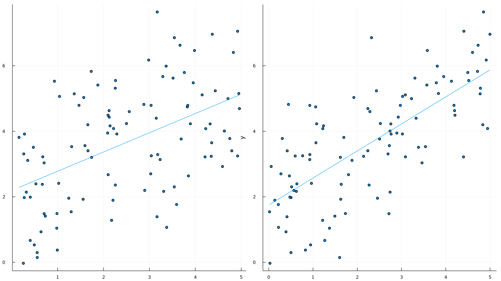
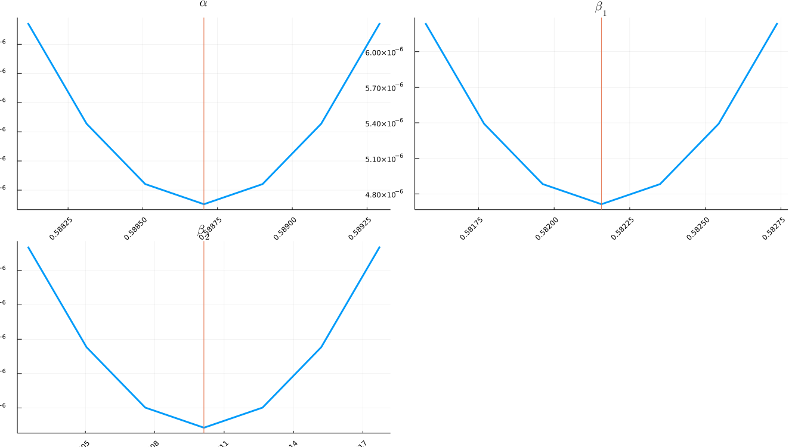

Getting Started
Our overarching goal is to find the parameter values $\theta_{MSM}$ minimizing the following function:
\[g(\theta; m*, W) = (m(\theta) - m*)' W (m(\theta) - m*)\]
where $m*$ is a vector of empirical moments, $m(\theta)$ is a vector of moments calculated using simulated data, and $W$ is carefully chosen weighting matrix. We also want to build confidence intervals for $\theta_{MSM}$.
While simple in theory (it is just a function minimization, right?), in practice many bad things can happen. The function $g$ may fail in some areas of the parameter space; $g$ may be stuck in some local minima; $g$ is really slow and you do not have a strong prior regarding good starting values. MSM.jl uses minimization algorithms that are robust to the problems mentioned above. You may choose between two options:
- Global minimization algorithms from BlackBoxOptim
- A multistart algorithm using several local optimization routines from Optim.jl
Let's follow a learning-by-doing approach. As a warm-up, let's first estimate parameters in serial. In a second step, we use several workers on a cluster.
Example in serial
In a real-world scenario, you would probably use empirical data. Here, let's simulate a fake dataset.
using MSM
using DataStructures
using OrderedCollections
using Random
using Distributions
using Statistics
using LinearAlgebra
using Distributed
using Plots
Random.seed!(1234) #for replicability reasons
T = 100000 #number of periods
P = 2 #number of dependent variables
beta0 = rand(P) #choose true coefficients by drawing from a uniform distribution on [0,1]
alpha0 = rand(1)[] #intercept
theta0 = 0.0 #coefficient to create serial correlation in the error terms
# Generation of error terms
# row = individual dimension
# column = time dimension
U = zeros(T)
d = Normal()
U[1] = rand(d, 1)[] #first error term
for t = 2:T
U[t] = rand(d, 1)[] + theta0*U[t-1]
end
# Let's simulate the dependent variables x_t
x = zeros(T, P)
d = Uniform(0, 5)
for p = 1:P
x[:,p] = rand(d, T)
end
# Let's calculate the resulting y_t
y = zeros(T)
for t=1:T
y[t] = alpha0 + x[t,1]*beta0[1] + x[t,2]*beta0[2] + U[t]
end
# Visualize data
p1 = scatter(x[1:100,1], y[1:100], xlabel = "x1", ylabel = "y", legend=:none, smooth=true)
p2 = scatter(x[1:100,2], y[1:100], xlabel = "x2", ylabel = "y", legend=:none, smooth=true)
p = plot(p1, p2);qt.qpa.xcb: could not connect to display qt.qpa.plugin: Could not load the Qt platform plugin "xcb" in "" even though it was found. This application failed to start because no Qt platform plugin could be initialized. Reinstalling the application may fix this problem. Available platform plugins are: linuxfb, minimal, offscreen, vnc, xcb. Aborted (core dumped) connect: Connection refused GKS: can't connect to GKS socket application GKS: Open failed in routine OPEN_WS GKS: GKS not in proper state. GKS must be either in the state WSOP or WSAC in routine ACTIVATE_WS

Step 1: Initializing a MSMProblem
# Select a global optimizer (see BlackBoxOptim.jl) and a local minimizer (see Optim.jl):
myProblem = MSMProblem(options = MSMOptions(maxFuncEvals=10000, globalOptimizer = :dxnes, localOptimizer = :LBFGS));MSMProblem(OrderedDict{String, Vector{Float64}}(), [1.0], OrderedDict{String, Vector{Float64}}(), OrderedDict{String, Float64}(), 0.0, MSM.default_function, MSM.default_function, MSM.default_function, MSMOptions(:dxnes, :LBFGS, 10000, "2021-06-15--9h-29m-6s", false, false, 50, 999999.0, :LHC, false, 20, 99999.9), BlackBoxOptim.OptController{BlackBoxOptim.DXNESOpt{Float64, BlackBoxOptim.RandomBound{BlackBoxOptim.ContinuousRectSearchSpace}}, BlackBoxOptim.FunctionBasedProblem{MSM.var"#3#4", BlackBoxOptim.ScalarFitnessScheme{true}, BlackBoxOptim.ContinuousRectSearchSpace, Nothing}}(BlackBoxOptim.DXNESOpt{Float64, BlackBoxOptim.RandomBound{BlackBoxOptim.ContinuousRectSearchSpace}}(BlackBoxOptim.RandomBound{BlackBoxOptim.ContinuousRectSearchSpace}(BlackBoxOptim.ContinuousRectSearchSpace([-5.0, -5.0], [5.0, 5.0], [10.0, 10.0])), 4, [0.48042271030918515, 0.01957728969081496, -0.25, -0.25], [-0.25, 0.01957728969081496, 0.48042271030918515, -0.25], 1.0, 0.03571428571428571, 1.5, 1.0e10, 1.8163974448785931, 0.7016420088558287, 0.9151637747160076, 1.0039720770839917, [NaN, NaN], [0.002321844170920644 -0.0005052790816961712; -0.0005052790816961712 -0.002321844170920644], 0.9990782361219008, [-2.939317084940021, -2.5029152206064627], [-1.2801725542057518 1.0391806772930472 1.2801725542057518 -1.0391806772930472; -0.7923598548760421 1.0942814352377142 0.7923598548760421 -1.0942814352377142], BlackBoxOptim.Candidate{Float64}[BlackBoxOptim.Candidate{Float64}([-2.8743511479243917, -2.5843064219395298], 3, 11779.018087525385, nothing, 0), BlackBoxOptim.Candidate{Float64}([-3.115343024837096, -2.2823848415778576], 2, 14387.54387135284, nothing, 0), BlackBoxOptim.Candidate{Float64}([-4.219637400026393, -4.470947712053286], 4, 49650.54309176089, nothing, 0), BlackBoxOptim.Candidate{Float64}([-4.874541154154051, -4.169026131691614], 1, 78043.99228389809, nothing, 0)], [-4.1545237021301435, -3.376666276815572], [0.0, 0.0], [1.2152066171901226, 0.8737510562091093], [0.002321844170920644 -0.0005052790816961712; -0.0005052790816961712 -0.002321844170920644], [0.32004313855143796 0.02034434116046328 0.6150239681549595 0.2597951693232618; 0.19808996371901053 0.021423064660929497 0.38066766901974075 0.27357035880942854], [-1.2801725542057518 1.0391806772930472 1.2801725542057518 -1.0391806772930472; -0.7923598548760421 1.0942814352377142 0.7923598548760421 -1.0942814352377142]), BlackBoxOptim.FunctionBasedProblem{MSM.var"#3#4", BlackBoxOptim.ScalarFitnessScheme{true}, BlackBoxOptim.ContinuousRectSearchSpace, Nothing}(MSM.var"#3#4"(), "<unknown>", BlackBoxOptim.ScalarFitnessScheme{true}(), BlackBoxOptim.ContinuousRectSearchSpace([-5.0, -5.0], [5.0, 5.0], [10.0, 10.0]), nothing), BlackBoxOptim.ParamsDictChain[BlackBoxOptim.ParamsDictChain[Dict{Symbol, Any}(:RngSeed => 747289, :NumDimensions => 2, :SearchRange => (-5.0, 5.0), :TraceMode => :silent, :Method => :dxnes, :MaxFuncEvals => 2, :MaxSteps => 0),Dict{Symbol, Any}()],Dict{Symbol, Any}(:CallbackInterval => -1.0, :TargetFitness => nothing, :TraceMode => :compact, :FitnessScheme => BlackBoxOptim.ScalarFitnessScheme{true}(), :MinDeltaFitnessTolerance => 1.0e-50, :NumDimensions => :NotSpecified, :FitnessTolerance => 1.0e-8, :TraceInterval => 0.5, :MaxStepsWithoutProgress => 10000, :MaxSteps => 10000…)], BlackBoxOptim.OptRunController{BlackBoxOptim.DXNESOpt{Float64, BlackBoxOptim.RandomBound{BlackBoxOptim.ContinuousRectSearchSpace}}, E} where E<:BlackBoxOptim.Evaluator[BlackBoxOptim.OptRunController{BlackBoxOptim.DXNESOpt{Float64, BlackBoxOptim.RandomBound{BlackBoxOptim.ContinuousRectSearchSpace}}, BlackBoxOptim.ProblemEvaluator{Float64, Float64, BlackBoxOptim.TopListArchive{Float64, BlackBoxOptim.ScalarFitnessScheme{true}}, BlackBoxOptim.FunctionBasedProblem{MSM.var"#3#4", BlackBoxOptim.ScalarFitnessScheme{true}, BlackBoxOptim.ContinuousRectSearchSpace, Nothing}}}(BlackBoxOptim.DXNESOpt{Float64, BlackBoxOptim.RandomBound{BlackBoxOptim.ContinuousRectSearchSpace}}(BlackBoxOptim.RandomBound{BlackBoxOptim.ContinuousRectSearchSpace}(BlackBoxOptim.ContinuousRectSearchSpace([-5.0, -5.0], [5.0, 5.0], [10.0, 10.0])), 4, [0.48042271030918515, 0.01957728969081496, -0.25, -0.25], [-0.25, 0.01957728969081496, 0.48042271030918515, -0.25], 1.0, 0.03571428571428571, 1.5, 1.0e10, 1.8163974448785931, 0.7016420088558287, 0.9151637747160076, 1.0039720770839917, [NaN, NaN], [0.002321844170920644 -0.0005052790816961712; -0.0005052790816961712 -0.002321844170920644], 0.9990782361219008, [-2.939317084940021, -2.5029152206064627], [-1.2801725542057518 1.0391806772930472 1.2801725542057518 -1.0391806772930472; -0.7923598548760421 1.0942814352377142 0.7923598548760421 -1.0942814352377142], BlackBoxOptim.Candidate{Float64}[BlackBoxOptim.Candidate{Float64}([-2.8743511479243917, -2.5843064219395298], 3, 11779.018087525385, nothing, 0), BlackBoxOptim.Candidate{Float64}([-3.115343024837096, -2.2823848415778576], 2, 14387.54387135284, nothing, 0), BlackBoxOptim.Candidate{Float64}([-4.219637400026393, -4.470947712053286], 4, 49650.54309176089, nothing, 0), BlackBoxOptim.Candidate{Float64}([-4.874541154154051, -4.169026131691614], 1, 78043.99228389809, nothing, 0)], [-4.1545237021301435, -3.376666276815572], [0.0, 0.0], [1.2152066171901226, 0.8737510562091093], [0.002321844170920644 -0.0005052790816961712; -0.0005052790816961712 -0.002321844170920644], [0.32004313855143796 0.02034434116046328 0.6150239681549595 0.2597951693232618; 0.19808996371901053 0.021423064660929497 0.38066766901974075 0.27357035880942854], [-1.2801725542057518 1.0391806772930472 1.2801725542057518 -1.0391806772930472; -0.7923598548760421 1.0942814352377142 0.7923598548760421 -1.0942814352377142]), BlackBoxOptim.ProblemEvaluator{Float64, Float64, BlackBoxOptim.TopListArchive{Float64, BlackBoxOptim.ScalarFitnessScheme{true}}, BlackBoxOptim.FunctionBasedProblem{MSM.var"#3#4", BlackBoxOptim.ScalarFitnessScheme{true}, BlackBoxOptim.ContinuousRectSearchSpace, Nothing}}(BlackBoxOptim.FunctionBasedProblem{MSM.var"#3#4", BlackBoxOptim.ScalarFitnessScheme{true}, BlackBoxOptim.ContinuousRectSearchSpace, Nothing}(MSM.var"#3#4"(), "<unknown>", BlackBoxOptim.ScalarFitnessScheme{true}(), BlackBoxOptim.ContinuousRectSearchSpace([-5.0, -5.0], [5.0, 5.0], [10.0, 10.0]), nothing), BlackBoxOptim.TopListArchive{Float64, BlackBoxOptim.ScalarFitnessScheme{true}}(BlackBoxOptim.ScalarFitnessScheme{true}(), 1.623749275790418e9, 2, 4, 10, BlackBoxOptim.TopListIndividual{Float64}[BlackBoxOptim.TopListIndividual{Float64}([-2.8743511479243917, -2.5843064219395298], 11779.018087525385, 0), BlackBoxOptim.TopListIndividual{Float64}([-3.115343024837096, -2.2823848415778576], 14387.54387135284, 0), BlackBoxOptim.TopListIndividual{Float64}([-4.219637400026393, -4.470947712053286], 49650.54309176089, 0), BlackBoxOptim.TopListIndividual{Float64}([-4.874541154154051, -4.169026131691614], 78043.99228389809, 0)], BlackBoxOptim.TopListFitness{Float64}[BlackBoxOptim.TopListFitness{Float64}(78043.99228389809, NaN, 1, 1.623749278448416e9), BlackBoxOptim.TopListFitness{Float64}(14387.54387135284, 0.8156482843802282, 2, 1.62374927844842e9), BlackBoxOptim.TopListFitness{Float64}(11779.018087525385, 0.1813044538492295, 3, 1.62374927844842e9)]), 4, 49650.54309176089), :silent, false, 0.5, BlackBoxOptim.var"#115#116"(), -1.0, 0, 2, 100, 10000, 0.0, 1.0e-50, 1.0e-8, 1, 0, 0, 1, 4, 0, 1.623749278448256e9, 1.623749278448457e9, 1.623749278448256e9, -1.0, "Max number of function evaluations (2) reached", true)]), BlackBoxOptim.OptimizationResults("dxnes", "Max number of function evaluations (2) reached", 1, 1.623749278448256e9, 0.0002009868621826172, BlackBoxOptim.ParamsDictChain[BlackBoxOptim.ParamsDictChain[Dict{Symbol, Any}(:RngSeed => 747289, :NumDimensions => 2, :SearchRange => (-5.0, 5.0), :TraceMode => :silent, :Method => :dxnes, :MaxFuncEvals => 2, :MaxSteps => 0),Dict{Symbol, Any}()],Dict{Symbol, Any}(:CallbackInterval => -1.0, :TargetFitness => nothing, :TraceMode => :compact, :FitnessScheme => BlackBoxOptim.ScalarFitnessScheme{true}(), :MinDeltaFitnessTolerance => 1.0e-50, :NumDimensions => :NotSpecified, :FitnessTolerance => 1.0e-8, :TraceInterval => 0.5, :MaxStepsWithoutProgress => 10000, :MaxSteps => 10000…)], 4, BlackBoxOptim.ScalarFitnessScheme{true}(), BlackBoxOptim.TopListArchiveOutput{Float64, Vector{Float64}}(11779.018087525385, [-2.8743511479243917, -2.5843064219395298]), BlackBoxOptim.PopulationOptimizerOutput{Vector{BlackBoxOptim.Candidate{Float64}}}(BlackBoxOptim.Candidate{Float64}[BlackBoxOptim.Candidate{Float64}([-2.8743511479243917, -2.5843064219395298], 3, 11779.018087525385, nothing, 0), BlackBoxOptim.Candidate{Float64}([-3.115343024837096, -2.2823848415778576], 2, 14387.54387135284, nothing, 0), BlackBoxOptim.Candidate{Float64}([-4.219637400026393, -4.470947712053286], 4, 49650.54309176089, nothing, 0), BlackBoxOptim.Candidate{Float64}([-4.874541154154051, -4.169026131691614], 1, 78043.99228389809, nothing, 0)])), * Status: success
* Candidate solution
Final objective value: 5.378405e-17
* Found with
Algorithm: L-BFGS
* Convergence measures
|x - x'| = 4.54e-11 ≰ 0.0e+00
|x - x'|/|x'| = 4.54e-11 ≰ 0.0e+00
|f(x) - f(x')| = 2.85e-19 ≰ 0.0e+00
|f(x) - f(x')|/|f(x')| = 5.29e-03 ≰ 0.0e+00
|g(x)| = 1.21e-13 ≤ 1.0e-08
* Work counters
Seconds run: 0 (vs limit Inf)
Iterations: 24
f(x) calls: 67
∇f(x) calls: 67
, Matrix{Float64}(undef, 0, 0), Matrix{Float64}(undef, 0, 0))Step 2. Set empirical moments and weight matrix
Choose the set of empirical moments to match and the weight matrix $W$ using the functions set_empirical_moments! and set_weight_matrix!
dictEmpiricalMoments = OrderedDict{String,Array{Float64,1}}()
dictEmpiricalMoments["mean"] = [mean(y)] #informative on the intercept
dictEmpiricalMoments["mean_x1y"] = [mean(x[:,1] .* y)] #informative on betas
dictEmpiricalMoments["mean_x2y"] = [mean(x[:,2] .* y)] #informative on betas
dictEmpiricalMoments["mean_x1y^2"] = [mean((x[:,1] .* y).^2)] #informative on betas
dictEmpiricalMoments["mean_x2y^2"] = [mean((x[:,2] .* y).^2)] #informative on betas
W = Matrix(1.0 .* I(length(dictEmpiricalMoments)))#initialization
#Special case: diagonal matrix
#Sum of square percentage deviations from empirical moments
#(you may choose something else)
for (indexMoment, k) in enumerate(keys(dictEmpiricalMoments))
W[indexMoment,indexMoment] = 1.0/(dictEmpiricalMoments[k][1])^2
end
set_empirical_moments!(myProblem, dictEmpiricalMoments)
set_weight_matrix!(myProblem, W)5×5 Matrix{Float64}:
0.0639756 0.0 0.0 0.0 0.0
0.0 0.00815893 0.0 0.0 0.0
0.0 0.0 0.00760278 0.0 0.0
0.0 0.0 0.0 2.41057e-5 0.0
0.0 0.0 0.0 0.0 2.07545e-5Step 3. Set priors
Our "prior" belief regarding the parameter values is to be specified using set_priors!(). It is not fully a full-fledged prior probability distribution, but simply an initial guess for each parameter, as well as lower and upper bounds:
dictPriors = OrderedDict{String,Array{Float64,1}}()
# Of the form: [initial_guess, lower_bound, upper_bound]
dictPriors["alpha"] = [0.5, 0.001, 1.0]
dictPriors["beta1"] = [0.5, 0.001, 1.0]
dictPriors["beta2"] = [0.5, 0.001, 1.0]
set_priors!(myProblem, dictPriors)OrderedDict{String, Vector{Float64}} with 3 entries:
"alpha" => [0.5, 0.001, 1.0]
"beta1" => [0.5, 0.001, 1.0]
"beta2" => [0.5, 0.001, 1.0]Step 4: Specifying the function generating simulated moments
The objective function must generate an ordered dictionary containing the keys of dictEmpiricalMoments. Use set_simulate_empirical_moments! and construct_objective_function!
Remark: we "freeze" randomness during the minimization step. One way to do that is to generate draws from a Uniform([0,1]) outside of the objective function and to use inverse transform sampling to generate draws from a normal distribution. Otherwise the objective function would be "noisy" and the minimization algorithms would have a hard time finding the global minimum.
# x[1] corresponds to the intercept; x[2] corresponds to beta1; x[3] corresponds to beta2
function functionLinearModel(x; uniform_draws::Array{Float64,1}, simX::Array{Float64,2}, nbDraws::Int64 = length(uniform_draws), burnInPerc::Int64 = 0)
T = nbDraws
P = 2 #number of dependent variables
alpha = x[1]
beta = x[2:end]
theta = 0.0 #coefficient to create serial correlation in the error terms
# Creation of error terms
# row = individual dimension
# column = time dimension
U = zeros(T)
d = Normal()
# Inverse cdf (i.e. quantile)
gaussian_draws = quantile.(d, uniform_draws)
U[1] = gaussian_draws[1] #first error term
for t = 2:T
U[t] = gaussian_draws[t] + theta*U[t-1]
end
# Let's calculate the resulting y_t
y = zeros(T)
for t=1:T
y[t] = alpha + simX[t,1]*beta[1] + simX[t,2]*beta[2] + U[t]
end
# Get rid of the burn-in phase:
#------------------------------
startT = max(1, Int(nbDraws * (burnInPerc / 100)))
# Moments:
#---------
output = OrderedDict{String,Float64}()
output["mean"] = mean(y[startT:nbDraws])
output["mean_x1y"] = mean(simX[startT:nbDraws,1] .* y[startT:nbDraws])
output["mean_x2y"] = mean(simX[startT:nbDraws,2] .* y[startT:nbDraws])
output["mean_x1y^2"] = mean((simX[startT:nbDraws,1] .* y[startT:nbDraws]).^2)
output["mean_x2y^2"] = mean((simX[startT:nbDraws,2] .* y[startT:nbDraws]).^2)
return output
end
# Let's freeze the randomness during the minimization
d_Uni = Uniform(0,1)
nbDraws = 100000 #number of draws in the simulated data
uniform_draws = rand(d_Uni, nbDraws)
simX = zeros(length(uniform_draws), 2)
d = Uniform(0, 5)
for p = 1:2
simX[:,p] = rand(d, length(uniform_draws))
end
# Attach the function parameters -> simulated moments:
set_simulate_empirical_moments!(myProblem, x -> functionLinearModel(x, uniform_draws = uniform_draws, simX = simX))
# Construct the objective (m-m*)'W(m-m*):
construct_objective_function!(myProblem)(::MSM.var"#objective_function_MSM#6"{MSMProblem}) (generic function with 1 method)Step 5. Running the optimization
Use the global optimization algorithm specified in globalOptimizer:
# Global optimization:
msm_optimize!(myProblem, verbose = false)(Any[4.712938627859275e-6], Any[[0.5887043488346545, 0.5821562708677344, 0.7610124799196438]])
Step 6. Analysing Results
Step 6.A. Point estimates
minimizer = msm_minimizer(myProblem)
minimum_val = msm_minimum(myProblem)
println("Minimum objective function = $(minimum_val)")
println("Estimated value for alpha = $(minimizer[1]). True value for beta1 = $(alpha0[1])")
println("Estimated value for beta1 = $(minimizer[2]). True value for beta1 = $(beta0[1])")
println("Estimated value for beta2 = $(minimizer[3]). True value for beta2 = $(beta0[2])")Minimum objective function = 4.712938627859275e-6 Estimated value for alpha = 0.5887043488346545. True value for beta1 = 0.5662374165061859 Estimated value for beta1 = 0.5821562708677344. True value for beta1 = 0.5908446386657102 Estimated value for beta2 = 0.7610124799196438. True value for beta2 = 0.7667970365022592
Step 6.B. Inference
Estimation of the distance matrix $\Sigma_0$
Let's calculate the variance-covariance matrix of the "distance matrix" (using the terminolgy of Duffie and Singleton (1993)). Here we know that errors are not correlated (the serial correlation coefficient is set to 0 in the code above). in the presence of serial correlation, an HAC estimation would be needed.
# Empirical Series
#-----------------
X = zeros(T, 5)
X[:,1] = y
X[:,2] = (x[:,1] .* y)
X[:,3] = (x[:,2] .* y)
X[:,4] = (x[:,1] .* y).^2
X[:,5] = (x[:,2] .* y).^2
Sigma0 = cov(X)5×5 Matrix{Float64}:
2.94358 12.2094 13.6633 347.964 393.375
12.2094 81.112 48.2454 2372.94 1514.43
13.6633 48.2454 87.9749 1501.9 2624.0
347.964 2372.94 1501.9 77699.5 50370.1
393.375 1514.43 2624.0 50370.1 87221.0Asymptotic variance
Theory
The asymptotic variance of the MSM estimate is calculated using the usual GMM sandwich formula, corrected to take into account simulation noise.
\[AsymptoticVarianceMSM = (1 + \tau)*AsymptoticVarianceGMM\]
Here we are trying to match unconditional moments from time series. In this case, $\tau = \frac{tData}{tSimulation}$, where $tData$ is the number of periods in the empirical data and $tSimulation$ is the number of time periods in the simulated data.
See Duffie and Singleton (1993) and Gouriéroux and Montfort (1996) for details on how to choose $\tau$.
Practice
Calculating the asymptotic variance using MSM.jl is done in two steps:
- setting the value of the "distance matrix" using the function
set_Sigma0! - calculating the asymptotic variance using the function
calculate_Avar!
set_Sigma0!(myProblem, Sigma0)
calculate_Avar!(myProblem, minimizer, tau = T/nbDraws) # nbDraws = number of draws in the simulated data3×3 Symmetric{Float64, Matrix{Float64}}:
50.7528 -11.6243 -8.42806
-11.6243 7.59434 -2.40769
-8.42806 -2.40769 6.64474Step 6.C. Summarizing the results
Once the asymptotic variance has been calculated, a summary table can be obtained using the function summary_table. This function has four inputs:
- a MSMProblem
- the minimizer of the objective function
- the length of the empirical sample
- the confidence level associated to the test H0: $\theta_i = 0$, H1: $\theta_i != 0$
df = summary_table(myProblem, minimizer, T, 0.05)| | Coef. | Std. Error | t | Pr(>|t|) | CI Lower | CI Upper | |:–-|––––-:|–––––-:|–––:|:––––-|:––––-|––––-:| | x1 | 0.588704 | 0.0225284 | 26.13 | <1e-99 | 0.551648 | 0.62576 | | x2 | 0.582156 | 0.00871455 | 66.80 | <1e-99 | 0.567822 | 0.59649 | | x3 | 0.761012 | 0.00815152 | 93.36 | <1e-99 | 0.747604 | 0.774421 |
Step 7. Identification checks
Local identification requires that the Jacobian matrix of the function $f(\theta) -> m(\theta)$ to be full column rank in a neighborhood of the solution:
D = calculate_D(myProblem, minimizer)
println("number of parameters: $(size(D,2))")
println("rank of D is: $(rank(D))")number of parameters: 3 rank of D is: 3
Local identification can also be visually checked by inspecting slices of the objective function in a neighborhood of the estimated value:
vXGrid, vYGrid = msm_slices(myProblem, minimizer, nbPoints = 7);
using LaTeXStrings;
p1 = plot(vXGrid[:, 1],vYGrid[:, 1],title = L"\alpha", label = "",linewidth = 3, xrotation = 45);
plot!(p1, [minimizer[1]], seriestype = :vline, label = "",linewidth = 1);
p2 = plot(vXGrid[:, 2],vYGrid[:, 2],title = L"\beta_1", label = "",linewidth = 3, xrotation = 45);
plot!(p2, [minimizer[2]], seriestype = :vline, label = "",linewidth = 1);
p3 = plot(vXGrid[:, 3],vYGrid[:, 3],title = L"\beta_2", label = "",linewidth = 3, xrotation = 45);
plot!(p3, [minimizer[3]], seriestype = :vline, label = "",linewidth = 1);
plot_combined = plot(p1, p2, p3);[ Info: slicing along alpha [ Info: slicing along beta1 [ Info: slicing along beta2 qt.qpa.xcb: could not connect to display qt.qpa.plugin: Could not load the Qt platform plugin "xcb" in "" even though it was found. This application failed to start because no Qt platform plugin could be initialized. Reinstalling the application may fix this problem. Available platform plugins are: linuxfb, minimal, offscreen, vnc, xcb. Aborted (core dumped) connect: Connection refused GKS: can't connect to GKS socket application GKS: Open failed in routine OPEN_WS GKS: GKS not in proper state. GKS must be either in the state WSOP or WSAC in routine ACTIVATE_WS

Example in parallel
To use the package on a cluster, one must make sure that empirical moments, priors and the weight matrix are defined for each worker. This can be done using @everywhere begin end blocks, or by using ParallelDataTransfer.jl. The function returning simulated moments must also be defined @everywhere. See the file LinearModelCluster.jl for details.
Option 1: Global parallel optimization
Choose a global optimizer that supports parallel evaluations (e.g. xnes or dxnes). See the documentation for BlackBoxOptim.jl.
msm_optimize!(myProblem, verbose = false)
minimizer = msm_minimizer(myProblem)
minimum_val = msm_minimum(myProblem)4.712938627859088e-6
Option 2: Multistart algorithm
The function msm_multistart! proceeds in two steps:
- It searches for starting values for which the model converges.
- Several local optimization algorithms (specified with
localOptimizer) are started in parallel using promising starting values from step 1
The "global" minimum is the minimum of the local minima:
msm_multistart!(myProblem, nums = nworkers(), verbose = false)
minimizer_multistart = msm_multistart_minimizer(myProblem)
minimum_multistart = msm_multistart_minimum(myProblem)4.7129386278606895e-6